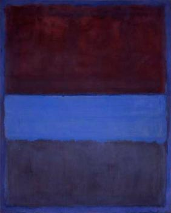

No. 61 (Rust and Blue)
Mark Rothko · 1953 · Oil on canvas · Museum of Contemporary Art, Los Angeles
In copyright. Small image shown under fair use, for reference and commentary.
The canvas is close to three metres tall, 292.74 by 233.68 centimetres. Rothko laid the colour on in layers, and in places the paint can be seen running upward across the surface. It was not exhibited until 1961, at the Museum of Modern Art in New York.